LALA WORD · UNIT 1
一字多義（一）
Colors Can Talk!
30 個單字一字多義
本單元單字一覽
同一個英文字，在不同句子裡可能有完全不同的意思：blue 是「藍色的」，也可以是「憂鬱的」；pen 是「筆」，也可以是「動物的圍欄」。先記住最常見的意思，再看例句學其他意思。前 7 個是主題單字，後 23 個是更多單字。
colorbluegreenroompennotebookdownballbabycookdrinkfamilyfatfinefishgifthungrylookmarkermeetnameopenrainriderulerrunschoolshortthinwatch
每個字先聽 🔊，再一個意思一個意思看例句。
1. color 主題單字．3 個意思
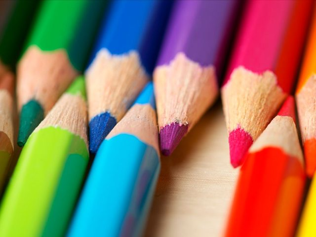
color
color - colored - colored - coloring
n.顏色
What color is your new bike?
你的新腳踏車是什麼顏色？
n.膚色
We should never judge people by their color.
我們絕不該以膚色評斷別人。
v.上色；染色
The kids colored the pictures with crayons.
孩子們用蠟筆幫圖畫上色。
2. blue 主題單字．4 個意思

blue
blue - bluer - bluest
n.藍色dark / light blue 深藍／淺藍
The sea changes from light blue to dark blue.
海從淺藍色變成深藍色。
adj.藍色的
Tom is wearing a blue cap today.
Tom 今天戴一頂藍色的帽子。
adj.憂鬱的；難過的
I feel a little blue on rainy Mondays.
下雨的星期一我覺得有點憂鬱。
片語出乎意料地out of the blue 出乎意料、突然
My old friend called me out of the blue.
我的老朋友突然打電話給我。
3. green 主題單字．4 個意思
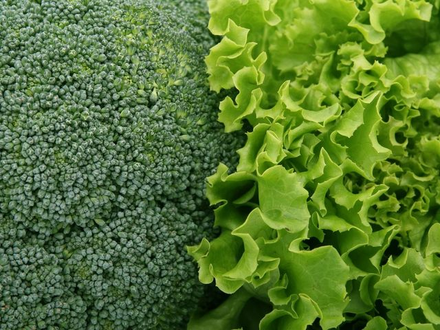
green
green - greener - greenest
adj.綠色的
The leaves turn green in spring.
春天葉子變綠了。
n.草地；（複數）蔬菜
Eat your greens, and you will grow strong.
把青菜吃完，你就會長得強壯。
adj.沒經驗的；生手的
He is still green at his new job.
他對新工作還很生疏。
adj.環保的go green 做環保
Our school is trying to go green.
我們學校正努力推動環保。
4. room 主題單字．2 個意思

room
n.房間
My room is next to the kitchen.
我的房間在廚房旁邊。
n.空間（不可數）make room for 騰出空間給
Is there room for one more person in the car?
車上還有空間再坐一個人嗎？
5. pen 主題單字．3 個意思

pen
pen - penned - penned - penning
n.筆
May I borrow your pen?
我可以借你的筆嗎？
n.（動物的）圍欄；圈
The pigs are sleeping in the pen.
豬在圍欄裡睡覺。
v.寫（＝write）
The poet penned this poem at the age of ten.
這位詩人十歲時寫了這首詩。
6. notebook 主題單字．2 個意思
notebook
n.筆記本
Write the new words in your notebook.
把新單字寫在你的筆記本裡。
n.筆記型電腦（＝laptop）
My sister uses a notebook to do her homework.
我姊姊用筆電寫作業。
7. down 主題單字．5 個意思

down
adv.向下；降低sit / lie / write down 坐下／躺下／寫下
Please sit down and open your books.
請坐下，把書打開。
prep.沿著…往下
The ball rolled down the hill.
球沿著山坡滾下去。
adj.情緒低落的
Ben looks down because he lost the game.
Ben 輸了比賽，看起來很沮喪。
adv.（音量）調低turn down 調低；拒絕
Could you turn the TV down?
你可以把電視轉小聲嗎？
n.羽絨
This down jacket keeps me warm.
這件羽絨外套讓我很溫暖。
8. ball 更多單字．2 個意思

ball
n.球
The dog ran after the ball.
狗追著球跑。
n.舞會
Cinderella went to the ball in a beautiful dress.
灰姑娘穿著漂亮的禮服去參加舞會。
9. baby 更多單字．2 個意思

baby
baby - babies
n.嬰兒
The baby is sleeping. Please be quiet.
寶寶在睡覺，請安靜。
adj.幼小的（＋動物）baby + 動物 小…
Look at the baby ducks!
看那些小鴨子！
10. cook 更多單字．2 個意思
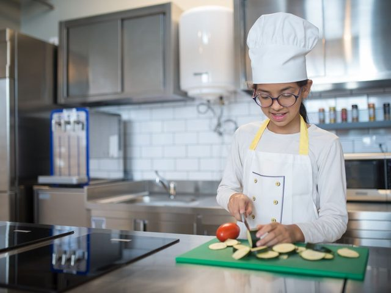
cook
v.煮；做菜cook + 人 + 食物 ＝ cook + 食物 + for + 人
Dad cooks dinner for us on weekends.
爸爸週末煮晚餐給我們吃。
n.廚師（cooker 是爐具）
My uncle is a cook at a hotel.
我叔叔在飯店當廚師。
11. drink 更多單字．2 個意思
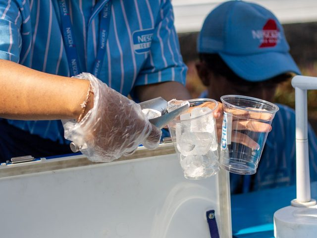
drink
drink - drank - drunk - drinking
v.喝；喝酒
Drink more water on hot days.
天氣熱要多喝水。
n.飲料
Would you like a cold drink?
你要不要來杯冷飲？
12. family 更多單字．2 個意思
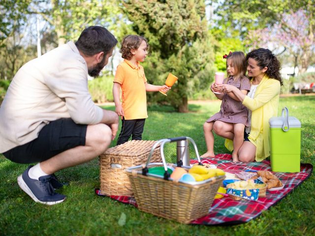
family
family - families
n.家庭
There are four families in this building.
這棟大樓住了四戶人家。
n.家人們（當複數）
My family are all early birds.
我的家人都是早起的人。
13. fat 更多單字．4 個意思

fat
fat - fatter - fattest
adj.胖的
Our cat got fat after eating too much.
我們的貓吃太多變胖了。
adj.厚的；豐厚的
He is reading a fat book about history.
他在看一本很厚的歷史書。
n.脂肪；油脂
Fried food has a lot of fat.
油炸食物有很多脂肪。
片語不可能fat chance 不可能
Me, win the lottery? Fat chance!
我中樂透？不可能啦！
14. fine 更多單字．4 個意思
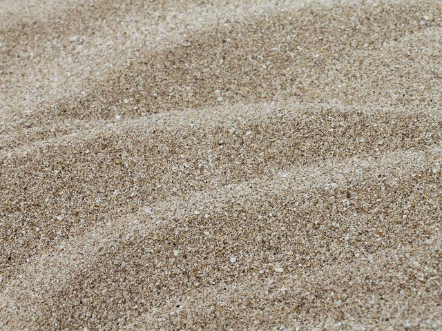
fine
fine - fined - fined - fining
adj.好的；健康的
A: How are you? B: I'm fine, thank you.
A：你好嗎？ B：我很好，謝謝。
adj.細的；細微的
The beach is covered with fine white sand.
海灘上滿是細細的白沙。
n.罰款
He had to pay a fine for parking there.
他在那裡停車被罰了錢。
v.處以罰款
The driver was fined for speeding.
那位駕駛因超速被罰款。
15. fish 更多單字．4 個意思

fish
fish - fished - fished - fishing
n.魚數量多還是 fish；種類多才用 fishes
There are many fish in the pond.
池塘裡有很多魚。
n.魚肉（不可數）
We had fish and rice for lunch.
我們午餐吃魚和飯。
v.釣魚；捕魚go fishing 去釣魚
Grandpa likes to go fishing by the river.
爺爺喜歡去河邊釣魚。
v.摸索翻找
Mom fished in her bag for her phone.
媽媽在包包裡翻找手機。
16. gift 更多單字．2 個意思

gift
n.禮物（＝present）
Thank you for the birthday gift!
謝謝你的生日禮物！
n.天分；才能have a gift for 有…的天分
Amy has a gift for music.
Amy 有音樂天分。
17. hungry 更多單字．2 個意思
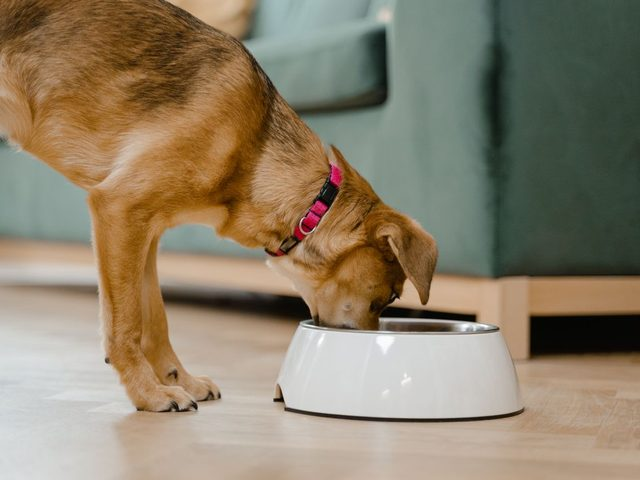
hungry
hungry - hungrier - hungriest
adj.飢餓的
I'm so hungry. Let's eat now.
我好餓，我們現在吃飯吧。
adj.渴望的be hungry for 渴望
The young player is hungry for a win.
這位年輕選手渴望贏球。
18. look 更多單字．5 個意思
look
look - looked - looked - looking
v.看look at 看著
Look at the board, please.
請看黑板。
v.看起來
You look happy today.
你今天看起來很開心。
v.尋找；查閱look for 尋找；look up 查（字典）
I'm looking for my glasses.
我在找我的眼鏡。
v.照顧look after 照顧
Can you look after my dog this weekend?
這週末你可以幫我照顧狗嗎？
n.看一眼；（複數）長相take a look 看一下
Let me take a look at your homework.
讓我看一下你的作業。
19. marker 更多單字．2 個意思

marker
n.麥克筆；白板筆
The teacher wrote the answer with a red marker.
老師用紅色白板筆寫下答案。
n.標記；記號
Follow the markers, and you won't get lost.
跟著路標走，你就不會迷路。
20. meet 更多單字．5 個意思

meet
meet - met - met - meeting
v.遇見；見面
Let's meet at the bus stop at nine.
我們九點在公車站見面吧。
v.認識
Nice to meet you.
很高興認識你。
v.開會
The class leaders meet every Friday.
班長們每週五開會。
v.達到；滿足（期限、要求）
We worked hard to meet the deadline.
我們努力工作以趕上截止日期。
n.比賽；運動會track / swim meet 田徑／游泳比賽
Our school has a swim meet next week.
我們學校下週有游泳比賽。
21. name 更多單字．3 個意思

name
name - named - named - naming
n.名字first name 名；last name 姓
What's your first name?
你的名字（不含姓）是什麼？
v.命名；取名be named after 以…命名
They named their dog Lucky.
他們把狗取名叫 Lucky。
v.說出；指定
Can you name three animals that live in the sea?
你能說出三種住在海裡的動物嗎？
22. open 更多單字．4 個意思

open
open - opened - opened - opening
v.打開
Please open the window. It's hot.
請打開窗戶，好熱。
v.開始；開幕
The new park will open next month.
新公園下個月開幕。
adj.開著的
Don't leave the door open.
別讓門開著。
adj.營業中的
Is the bookstore open on Sundays?
書店星期天有開嗎？
23. rain 更多單字．3 個意思
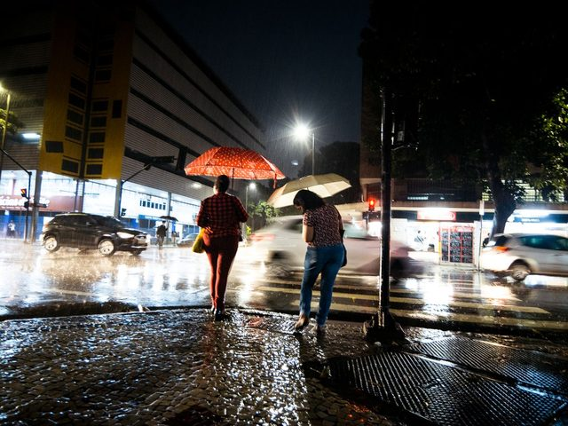
rain
rain - rained - rained - raining
n.雨（不可數）
We had a lot of rain last week.
上週下了很多雨。
v.下雨rain hard / heavily 下大雨
It's raining hard outside.
外面雨下得很大。
片語無論如何；風雨無阻rain or shine 風雨無阻
The game will go on, rain or shine.
比賽風雨無阻照常舉行。
24. ride 更多單字．3 個意思

ride
ride - rode - ridden - riding
v.騎；搭乘
I ride my bike to school every day.
我每天騎腳踏車上學。
n.搭車；車程give + 人 + a ride 載某人
Can you give me a ride to the station?
你可以載我去車站嗎？
n.（遊樂園的）遊樂設施
The roller coaster is the best ride in the park.
雲霄飛車是樂園裡最好玩的設施。
25. ruler 更多單字．2 個意思

ruler
n.尺
Use a ruler to draw a straight line.
用尺畫一條直線。
n.統治者
The king was a kind ruler.
那位國王是一位仁慈的統治者。
26. run 更多單字．4 個意思
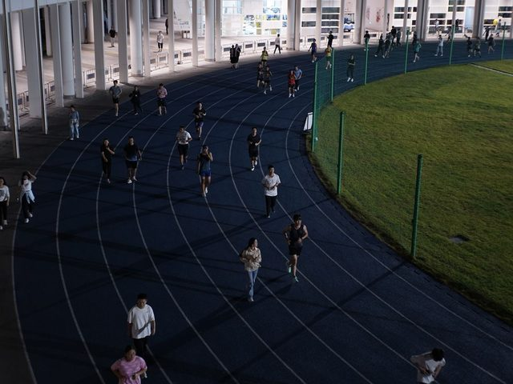
run
run - ran - run - running
v.跑
Don't run in the hallway.
不要在走廊上奔跑。
n.跑步go for a run 去跑步
Let's go for a run after school.
放學後我們去跑步吧。
v.經營；運作
Her parents run a noodle shop.
她爸媽開了一間麵店。
片語用完run out of 用完
We have run out of milk.
我們的牛奶喝完了。
27. school 更多單字．3 個意思
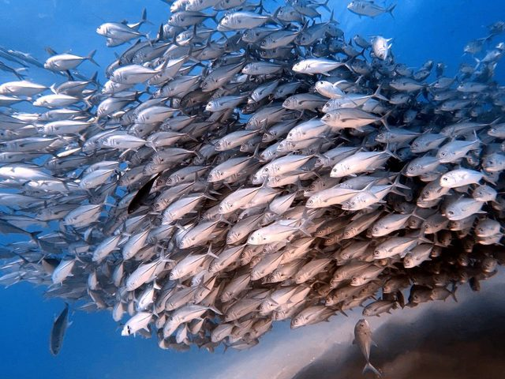
school
n.學校
Our school has a big library.
我們學校有一間很大的圖書館。
n.上學；上課時間（不可數）after school 放學後；go to school 上學
Let's play basketball after school.
我們放學後去打籃球吧。
n.（魚、海豚的）群a school of fish 一群魚
A school of fish swam past our boat.
一群魚游過我們的船。
28. short 更多單字．4 個意思

short
short - shorter - shortest
adj.短的；矮的
My little brother is too short to reach the shelf.
我弟弟太矮，搆不到架子。
adj.（時間）短暫的in short 簡單來說
Let's take a short break.
我們休息一下吧。
adj.不足的；缺少的be short of 缺少
We are short of time. Hurry up!
我們時間不夠了，快一點！
n.短褲（用複數 shorts）
He wears shorts and a T-shirt in summer.
他夏天穿短褲和 T 恤。
29. thin 更多單字．3 個意思

thin
thin - thinner - thinnest
adj.瘦的（↔ fat）
The model is tall and thin.
那位模特兒又高又瘦。
adj.薄的；細的（↔ thick）
I cut the bread into thin slices.
我把麵包切成薄片。
adj.稀薄的；稀疏的
The air is thin on high mountains.
高山上的空氣很稀薄。
30. watch 更多單字．4 個意思
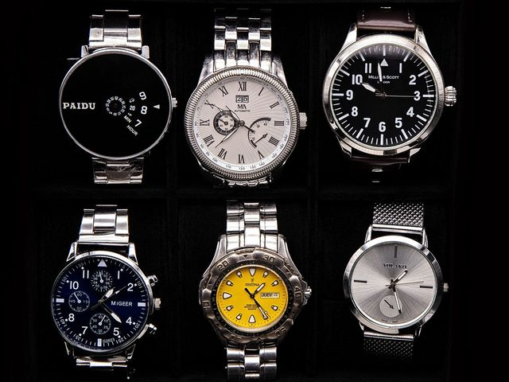
watch
watch - watched - watched - watching
n.手錶
My watch is five minutes fast.
我的手錶快了五分鐘。
v.觀看
We watched a movie last night.
我們昨晚看了一部電影。
v.照看；看守
Can you watch my bag for a minute?
你可以幫我顧一下包包嗎？
v.小心；注意watch out 小心
Watch your step! The floor is wet.
小心腳步！地板是濕的。
一字多義：最常見 vs. 容易忽略的意思
| 單字 | 最常見的意思 | 容易忽略的意思 |
|---|---|---|
| blue | 藍色的 | 憂鬱的；out of the blue 突然 |
| green | 綠色的 | 沒經驗的；環保的；greens 蔬菜 |
| pen | 筆 | 動物的圍欄 |
| down | 向下 | 情緒低落的；羽絨 |
| ball | 球 | 舞會 |
| fine | 好的 | 細的；罰款 |
| ruler | 尺 | 統治者 |
| school | 學校 | （魚）群 |
| watch | 手錶；看 | 照顧；小心 |
看到熟悉的字卻讀不通句子時，想想看這個字是不是還有別的意思。
常用片語
| 片語 | 意思 | 例句 |
|---|---|---|
| look for / look after | 尋找／照顧 | I'm looking for my keys. |
| run out of | 用完 | We have run out of milk. |
| be short of | 缺少 | We are short of time. |
| have a gift for | 有…的天分 | Amy has a gift for music. |
| give + 人 + a ride | 載某人一程 | Can you give me a ride? |
| rain or shine | 風雨無阻 | The game will go on, rain or shine. |
| out of the blue | 突然；出乎意料 | He called me out of the blue. |
快問快答：這句的 粗體字 是什麼意思？
1The kids colored the pictures with crayons.上色；染色
2My old friend called me out of the blue.出乎意料地
3Our school is trying to go green.環保的
4Is there room for one more person in the car?空間（不可數）
5The poet penned this poem at the age of ten.寫（＝write）
6My sister uses a notebook to do her homework.筆記型電腦（＝laptop）
7This down jacket keeps me warm.羽絨
8Cinderella went to the ball in a beautiful dress.舞會
快問快答：這句的 粗體字 是什麼意思？
1Look at the baby ducks!幼小的（＋動物）
2My uncle is a cook at a hotel.廚師（cooker 是爐具）
3Would you like a cold drink?飲料
4My family are all early birds.家人們（當複數）
5Me, win the lottery? Fat chance!不可能
6The driver was fined for speeding.處以罰款
7Mom fished in her bag for her phone.摸索翻找
8Amy has a gift for music.天分；才能
學完了！接下來
複習方法
review
- 回到「📗 單字卡」，按「遮中文」，看例句說出每個意思
- 特別記「容易忽略的意思」（例如 pen 圍欄、ball 舞會）
- 每個例句跟著 🔊 唸一次
準備好了
- 按右上角「📝 前往測驗」
- 測驗錯的題目要訂正到全對
- 訂正完成補送 1 點